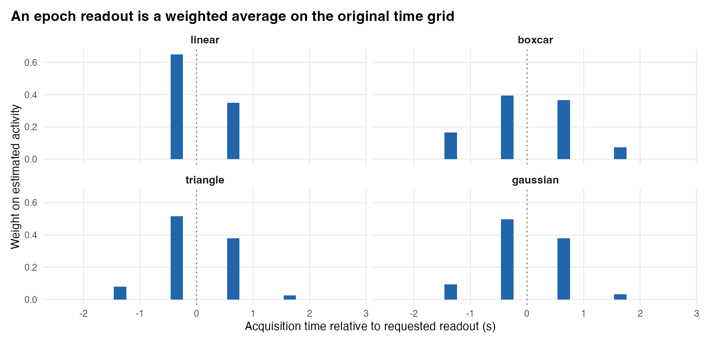
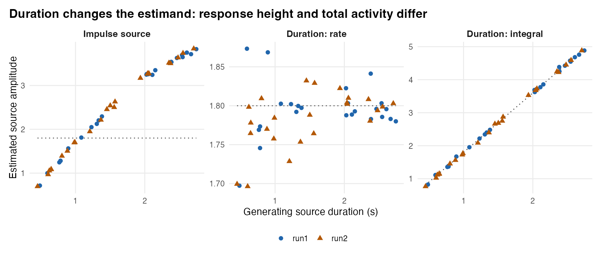
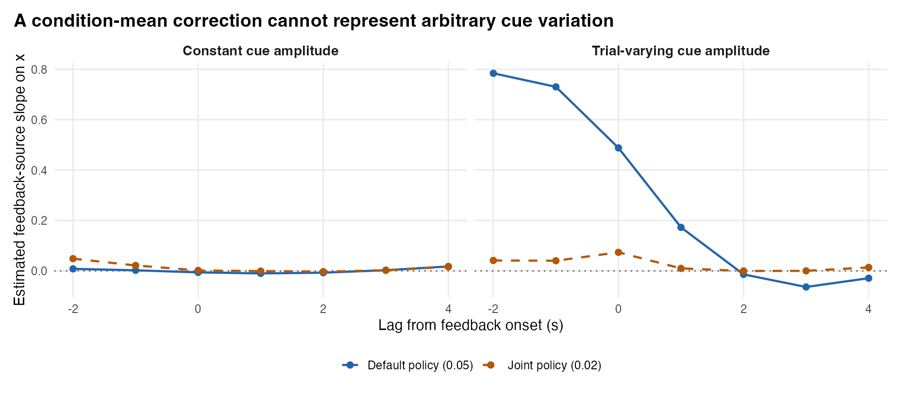
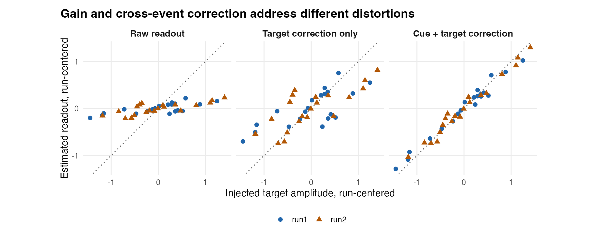
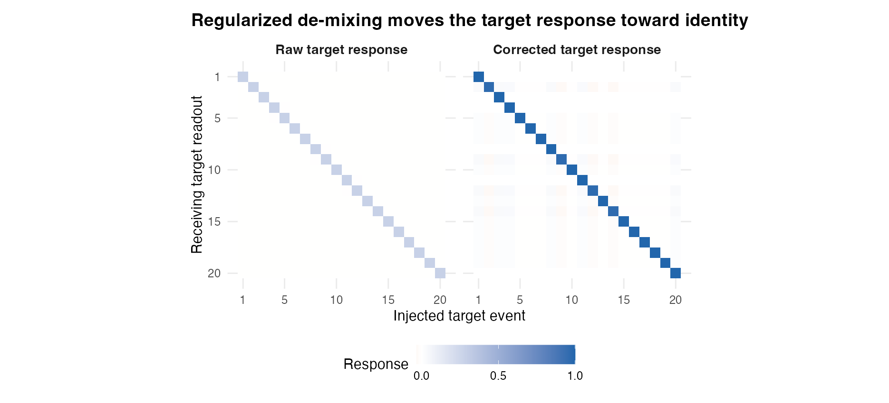
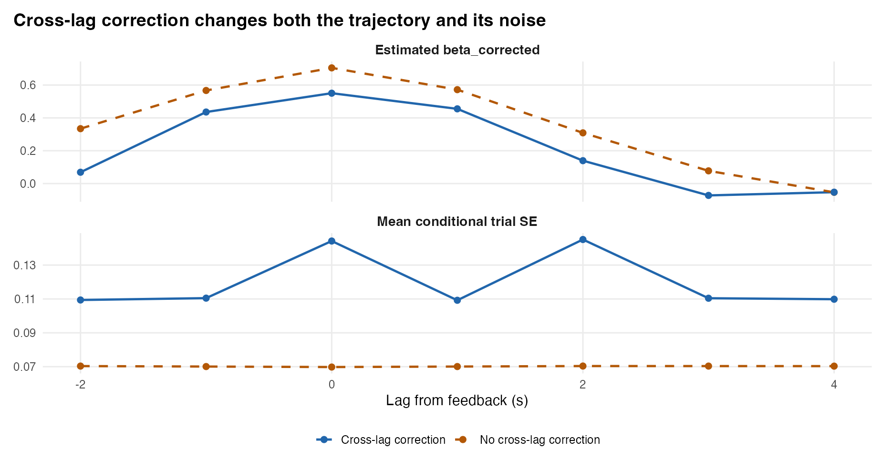
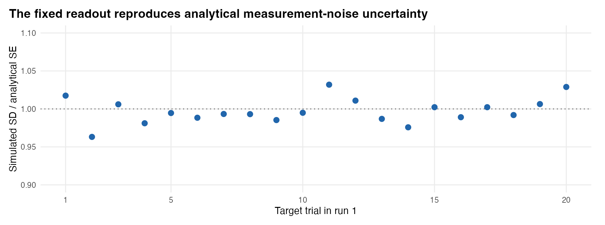
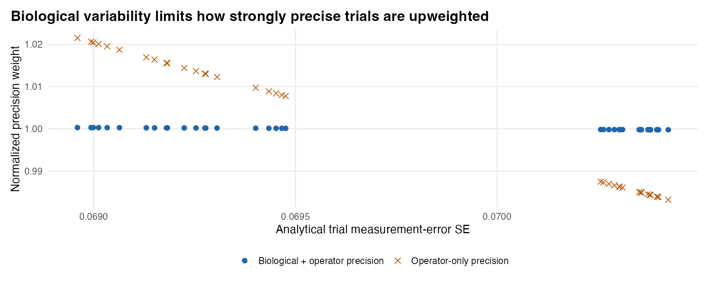
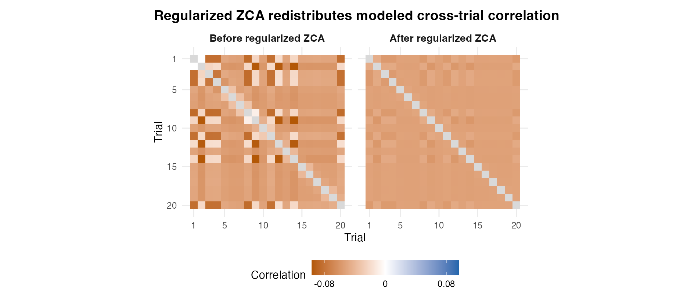

library(medusa)
epochs <- decon_epoch_regression(
deconvolution = decon,
covariates = covariates,
events = events,
target_condition = "feedback",
lags = seq(-2, 4, by = 1),
restore_scale = TRUE,
whiten_panel = TRUE,
return_panel = TRUE
)Step 3: Epoch Alignment, De-Mixing, and Uncertainty Propagation
Mapping continuous deconvolved series onto trial-level readouts, durations, and standard errors
Overview
Step 2 produces a continuous deconvolved time series \(\widehat{a}_r(t)\) on the acquisition grid, whereas cognitive hypotheses typically concern event-locked trial responses—for example, neural activity across lags \(-2\text{ s}\) to \(+4\text{ s}\) around feedback onset, or sustained deliberation activity across variable reaction times. Because regularized deconvolution smooths slightly across time, simply slicing \(\widehat{a}_r(t)\) at event timestamps yields readouts that combine the target trial’s signal with regularization attenuation and spillover from nearby cues or adjacent trials.
Step 3 (decon_epoch_regression()) converts continuous deconvolved activity into conditionally unbiased, additive-error trial readouts accompanied by exact propagated measurement uncertainties. Passing the forward event schedule through Step 2’s frozen linear operator \(D_r\), it samples requested peri-event lags via smooth local time-averaging (symmetric kernel quadrature), subtracts spillover from non-target events, inverts target-to-target mixing to restore amplitude gain, and propagates \(\text{AR}(p)\) observation noise through the composite operator to deliver per-trial standard errors (se_demixed), Empirical-Bayes precision weights, and optional within-run decorrelated (*_whitened) variables.
NotePosition in the MEDuSA Pipeline
Step 2 decon object + events + optional covariates / trial_durations \(\longrightarrow\) Step 3 (decon_epoch_regression) \(\longrightarrow\) Within-subject coefficients + event-aligned trial panel (or combined directly with Step 4 parcel aggregation via parcel_groups)
Following the same measurement-model progression used in two-step multilevel inference (Vig & Hallquist, 2026), the four substeps below move from defining the event source and readout kernel (3.1), to writing the epoch measurement model and removing non-target bleed (3.2), inverting target mixing onto an additive-error scale (3.3), and propagating trial error covariances and precision weights (3.4).
Goals, Inputs, and Outputs
Goals of Step 3
- Sample peri-event lag trajectories with explicit duration semantics: Read out continuous activity around each target event across requested
lags, supporting brief impulses, fixed windows, and RT-matched sustained intervals ("rate"vs."integral"). - Remove non-target spillover and target-to-target mixing: Use the Step 2 operator \(D_r H_r\) to subtract interfering event bleed (
demix_other_events) and invert target cross-talk (demix_target_trials) while matching centered predictors through the post-demixing operator \(M_{\text{post}}\). - Propagate observation-noise covariance analytically to every trial: Compute per-trial measurement standard errors (
se_demixed) and lag-1 trial error correlations (error_ac1) directly from the composite linear operator without resampling. - Construct stabilized trial precision weights and optional decorrelated panels: Combine propagated measurement error with Empirical-Bayes biological trial variance (\(\hat{\tau}_{\text{bio}}^2\), stabilized across functionally concordant cortical neighbors on NIfTI maps via
"graph_eb") to form cohort-ready weights and decorrelated trial columns.
Inputs: What Step 3 Receives and Why
| Input | Structure | Why It Is Set Up That Way |
|---|---|---|
deconvolution |
"crossrun_decon" S3 object from deconvolve_crossrun_hrf() |
Carries activity together with hrf_fit, scaling, noise_innovations, and frame_weights so Step 3 reconstructs the exact stratum inverse operator \(D_r\) and noise covariance \(\Sigma_r\). |
events & target_condition |
Run-named list of event data.frames (inherited from hrf_fit by default); character scalar naming target events |
Retaining all task events in events while naming target_condition identifies both the target trials to read out and the non-target events (cues, motor responses) whose spillover into target windows should be subtracted. |
covariates |
NULL (covariate-agnostic panel mode), or numeric matrix/data.frame/formula/column names matching target events |
Passing covariates = NULL produces a general-purpose de-mixed panel reusable across many downstream Step 5–6 models; supplying covariates adds within-participant regression tables (coefficients) and paired *_whitened predictor columns. |
lags & readout_kernel |
Numeric vector of lag offsets in seconds (e.g., seq(-2, 4, by = 1)); "triangle", "linear", "boxcar", or "gaussian" |
Evaluates event-locked readouts at arbitrary offsets without resampling BOLD, shifting both the readout window and modeled target source to \(t_i + \tau\). |
source_model, trial_durations, & duration_scale |
"impulse", "window", or "duration"; optional target durations (s); "rate" or "integral" |
Specifies the latent neural waveform represented by each trial amplitude so variable reaction times can be modeled either as firing height ("rate") or time-integrated activity ("integral"). |
demix_other_events, demix_target_trials, & demix_within_trial |
Logical flags + demix_ridge (0.05) & within_trial_ridge (0.06) |
Separately control non-target subtraction, trial-to-trial target de-mixing, and optional single-subject cross-lag sharpening. |
tau2_shrinkage & spatial_graph |
tau2_shrinkage = c("auto", "graph_eb", "eb", "none"); optional "medusa_spatial_graph" |
Stabilizes biological trial variance \(\hat{\tau}_{\text{bio}}^2\) and sandwich residual scales without smoothing trial slopes ("auto" selects bilateral "graph_eb" automatically on voxelwise NIfTI maps). |
Outputs: What Step 3 Produces and Why It Is Set Up That Way
| Output Component | Structure | Why It Is Set Up That Way |
|---|---|---|
panel |
Tidy data.table keyed by run, trial, event_index, onset, evt_time, and voxel/parcel |
Primary trial table for Steps 5–6. Stores both trial (1..\(m\) target counter) and event_index (row in events[[r]]) alongside decon_raw, decon_demixed, se_demixed, precision_weight, precision_weight_cohort, error_ac1, tau2_bio, decon_eb, and optional *_whitened columns. |
coefficients & summary |
Per-unit × lag × term data.frame (beta_raw, beta_corrected, beta_unweighted, beta_weighted, beta_gls, SEs, moderated df, \(t\), \(p\)); lag summary |
Places uncorrected (beta_raw) and de-mixed/GLS slopes side by side under the same Step 2 inverse so the impact of operator de-mixing and precision weighting is transparent. |
lag_resolution & lag_error_cor |
Per-unit \(L \times L\) cross-lag resolution and trial error correlation matrices | Carried forward so medusa_multilag_infer() (Step 5) can apply group-level spectral deblurring, P-spline smoothing, and simultaneous bands across lags. |
unit_error_cor & parcel_weights |
Empirical-Bayes shrunk unit-by-unit error correlation matrix; voxel weights (when aggregate_by_parcel = TRUE) |
Supplies task-free cross-region error correlations (shared_noise_loading in panel) for Step 6 connectivity disattenuation. |
Step-by-Step Walkthrough: Substeps and Choice Points
3.1 Define the event-locked neural source and kernel readout
Consider reading out continuous deconvolved activity \(\widehat{a}_r\) around target event \(i\) at timestamp \(t_i + \tau\). Because \(t_i + \tau\) rarely lands on an exact integer TR, Step 3 forms a row-normalized weight vector \(S_\tau[i, :]\) over nearby acquisition samples (Figure 6.1). While "linear" uses 2-point bracket interpolation, "triangle" (width \(1.5 \times \text{TR}\)) averages 9 symmetrically weighted sub-interval points across adjacent samples (symmetric kernel quadrature)—respecting sub-TR jitter while attenuating high-frequency inverse noise.

20.35 s, TR = 1 s) for "linear", "boxcar", "triangle", and "gaussian" kernels.
Alongside the readout window, Step 3 asks a substantive question about source duration: what neural time course does trial \(i\)’s amplitude \(\theta_i\) multiply? Suppose deliberation neural activity stays at a constant firing rate (1.8 units/s) across trials whose reaction times vary from 0.4 to 2.8 s. Because longer deliberation produces larger integrated BOLD deflections, different source models estimate distinct quantities (Figure 6.2):
source_model = "impulse"treats every trial as a brief unit impulse, attributing longer-duration BOLD accumulation to higher amplitude and producing a positive slope against RT (beta = 1.392).source_model = "duration", duration_scale = "rate"matches both the forward boxcar and midpoint readout window to each trial’s duration[onset + lag, onset + lag + RT], recovering a flat firing-rate slope invariant to RT (beta = 0.015, near true0.00).source_model = "duration", duration_scale = "integral"normalizes each forward boxcar to unit area, explicitly estimating time-integrated neural activity (1.8 × duration, recovering slope1.806vs. true1.800).

Choice point — Source model (source_model & duration_scale) and readout_kernel: Pair readout_kernel = "triangle" (readout_width = 1.5 * tr) with source_model = "impulse" for brief phasic events (e.g., feedback delivery). For variable-duration epochs (e.g., choice deliberation), pass source_model = "duration" with trial_durations = rt and choose duration_scale = "rate" to test neural intensity per unit time or "integral" to test cumulative activity.
3.2 Write the epoch measurement model and subtract non-target spillover
Now consider a cue–feedback paradigm where each Cue precedes Feedback by 1–3 seconds. Let \(\theta_T\) denote true target (Feedback) trial amplitudes with forward BOLD design \(G_\tau\), and \(\theta_O\) denote non-target (Cue) amplitudes with forward design \(G_O\). Applying readout \(S_\tau\) to deconvolved activity \(\widehat{a}_r = D_r y_r\) yields a raw trial readout whose conditional expectation contains two distinct terms:
\[ \mathbb{E}\bigl[\hat{z}_{\text{raw},\tau} \mid \theta_T, \theta_O\bigr] = \underbrace{(S_\tau D_r G_\tau)\,\theta_T}_{\text{attenuated & mixed targets}} \;+\; \underbrace{(S_\tau D_r G_O)\,\theta_O}_{\text{non-target spillover}}. \]
In simulate_step3.R, a Cue_only voxel responds to cues but has zero true feedback slope (\(\beta = 0\)), while reaction time links cue–feedback spacing to covariate x. Because of the second term above, raw feedback readouts in Cue_only pick up spurious cue spillover (beta_raw = -0.115; Table 6.1).
Enabling demix_other_events = TRUE estimates and subtracts the operator-predicted non-target contribution \((S_\tau D_r G_O) L_{\text{other}} y_r\), forming cleaned readout rows \(S_{\text{clean},\tau}\) before target amplitudes are evaluated (Figure 6.3).

Cue_only voxel under constant cue amplitude (left) versus trial-varying cue amplitude correlated with x (right), comparing default condition-mean de-mixing (0.05) against joint trial-level de-mixing (0.02).
Choice point — Non-target subtraction (demix_other_events & demix_ridge): Keep demix_other_events = TRUE. At the default demix_ridge = 0.05, non-target subtraction uses a low-variance condition-mean operator (Cue_only slope reduced to -0.006 when cues have constant amplitude; Figure 6.3, left). When an upstream cue is itself strongly modulated trial-by-trial by the same behavioral predictor as your target event, lowering demix_ridge = 0.02 activates joint ridge-stabilized (2nd-order Tikhonov) (T, O) trial de-mixing—reducing correlated cue bleed from 0.488 to 0.074 in trade for modestly wider trial SEs (0.101 vs. 0.070; Figure 6.3, right).
3.3 Invert target-to-target mixing to recover an additive-error readout
After removing non-target spillover, the cleaned readout still reflects Step 2’s regularization blur across target trials, \(K_{\text{clean},\tau} = S_{\text{clean},\tau} D_r G_\tau\). Writing this in the exact measurement-model form of Vig & Hallquist (2026) by adding and subtracting \(\theta_T\):
\[ S_{\text{clean},\tau}\widehat{a}_r = \theta_T - (I - K_{\text{clean},\tau})\theta_T + S_{\text{clean},\tau} D_r \varepsilon_r. \]
Without inverting \(K_{\text{clean},\tau}\), diagonal shrinkage (\([K_{\text{clean},\tau}]_{ii} < 1\)) and neighbor overlap attenuate the true 0.70 feedback slope in Target down to beta_raw = 0.088 (Table 6.1). Enabling demix_target_trials = TRUE applies a ridge-stabilized inverse \(W_\tau\) on run-centered trials (Tikhonov regularization) with diagonal gain restoration \(\tilde{G}_\tau\) (decon_demixed), sharpening the 20×20 target resolution matrix toward the identity (Figure 6.5) and recovering the true 0.70 slope cleanly (Target = 0.705, Noisy_target = 0.673; Figure 6.4, Table 6.1). To ensure any small ridge stabilization in \(W_\tau\) at rapid ISIs never biases trial regressions, centered covariates are multiplied by the matched post-demixing resolution matrix \(M_{\text{post}}\) so predictor and response share identical coordinates.

Target across raw readout, target-only de-mixing, and full cue + target de-mixing.

Raw target response) and after (Corrected target response) Step 3 regularized de-mixing.
Show supporting code
knitr::kable(pol, digits = 3, row.names = FALSE,
col.names = c("Voxel", "Raw Slope", "Corrected Slope", "Mean Trial SE", "Policy"))policy_metrics.csv).
| Voxel | Raw Slope | Corrected Slope | Mean Trial SE | Policy |
|---|---|---|---|---|
| Cue_only | -0.115 | -0.115 | 0.020 | raw |
| Target | 0.088 | 0.088 | 0.020 | raw |
| Noisy_target | 0.083 | 0.083 | 0.054 | raw |
| Cue_only | -0.115 | -0.401 | 0.070 | target_only |
| Target | 0.088 | 0.307 | 0.070 | target_only |
| Noisy_target | 0.083 | 0.290 | 0.188 | target_only |
| Cue_only | -0.115 | -0.006 | 0.070 | default |
| Target | 0.088 | 0.705 | 0.070 | default |
| Noisy_target | 0.083 | 0.673 | 0.186 | default |
| Cue_only | -0.115 | 0.002 | 0.101 | joint |
| Target | 0.088 | 0.701 | 0.101 | joint |
| Noisy_target | 0.083 | 0.651 | 0.270 | joint |
| Cue_only | 0.006 | 0.488 | 0.070 | stress_default |
| Target | 0.209 | 1.199 | 0.070 | stress_default |
| Noisy_target | 0.204 | 1.168 | 0.186 | stress_default |
| Cue_only | 0.006 | 0.074 | 0.101 | stress_joint |
| Target | 0.209 | 0.773 | 0.101 | stress_joint |
| Noisy_target | 0.204 | 0.722 | 0.270 | stress_joint |
When multiple peri-event lags are requested, adjacent lags within the same trial also share deconvolution smoothness. Setting demix_within_trial = TRUE applies an additional ridge-stabilized cross-lag inverse within each participant, narrowing single-subject lag curves at the cost of larger per-lag SEs (Figure 6.6).

demix_within_trial = TRUE on estimated lag slopes (top) and conditional per-trial measurement SE (bottom).
Choice point — Target and cross-lag de-mixing: Keep demix_target_trials = TRUE in all operator analyses. Leave demix_within_trial = FALSE when passing outputs to medusa_multilag_infer() in Step 5 (which sharpens cross-lag blurring at the group level via spectral deblurring, where SNR is \(\sqrt{N}\) higher), and enable demix_within_trial = TRUE when inspecting descriptive single-subject curves or fitting single-lag models where sharper lag localization is desired.
3.4 Propagate observation-noise covariance and construct trial precision weights
Because every operation from centered BOLD to decon_demixed is captured in the composite linear map \(B_{r,\tau} = \tilde{G}_\tau W_\tau S_{\text{clean},\tau} D_r\), the conditional sampling covariance of the de-mixed trial vector is known analytically: \[
\Omega_{r,\tau} = \operatorname{Cov}(e_{r,\tau} \mid B_{r,\tau}) \propto Q_m B_{r,\tau} \Sigma_{\text{obs},r} B_{r,\tau}^\top Q_m.
\] MEDuSA evaluates \(\Omega_{r,\tau}\) in fast factored form without forming dense \(T \times T\) covariance matrices, matching dense matrix multiplication to 6.07e-18 and reproducing 2,500-draw Monte Carlo noise SDs trial by trial (se_demixed; Figure 6.7).

se_demixed across all 20 target trials in Run 1.
Trials near run boundaries, scrub gaps, or rapid event clusters naturally have larger measurement error \(s_{ri}^2 = \texttt{se\_demixed}_{ri}^2\). However, trials also vary due to genuine biological trial-to-trial variability \(\tau_{\text{bio}}^2\). Just as composite weights in multilevel moment estimation combine structural disturbance variance with measurement-error variance (Vig & Hallquist, 2026), Step 3 estimates \(\hat{\tau}_{\text{bio}}^2\) and forms Empirical-Bayes composite precision weights \(w_{ri} \propto (\hat{\tau}_{\text{eff}}^2 + s_{ri}^2)^{-1}\) (precision_weight normalized to mean 1 within unit; precision_weight_cohort left unnormalized for multi-subject models), downweighting high-SE trials smoothly without letting a single low-SE trial dominate (Figure 6.8). When requested (whiten_panel = TRUE), Step 3 also applies a run-mean-preserving symmetric decorrelation transform that removes off-diagonal within-run trial error correlations while keeping each trial aligned as closely as possible to its original ordering (regularized zero-phase component analysis, or ZCA whitening; Figure 6.9).

precision_weight_op) versus biological-variance-stabilized Empirical-Bayes weights (precision_weight).

whiten_panel = TRUE, regularized ZCA).
Choice point — Variance shrinkage (tau2_shrinkage), physical units (restore_scale), and trial decorrelation (whiten_panel):
- Variance stabilization (
tau2_shrinkage = "auto"): In single-voxel NIfTI analyses (aggregate_by_parcel = FALSE), raw per-voxel \(\hat{\tau}_{\text{raw}}^2 = \hat{\sigma}_{\text{tot}}^2 - s_{\text{obs}}^2\) has wide sampling variance over 40–80 trials and frequently truncates to zero."auto"automatically activates edge-preserving neighborhood variance pooling ("graph_eb"), which stabilizes the dimensionless ratio \(\hat{\tau}_{\text{raw}}^2 / s_{\text{obs}}^2\) across functionally concordant cortical neighbors before zero-truncation. To keep neighborhood pooling calibrated, it discounts shared scanner noise between neighbors (via Isserlis’ squared-correlation identity), caps how far isolated focal hotspots can be pulled toward quiet surround voxels (at \(2.5\) standard errors via Efron–Morris limited translation), and borrows residual scale precision across concordant neighbors (Empirical-Bayes variance moderation; Smyth, 2004)—without ever smoothing trial slopes \(\hat{\beta}\) (see Spatial Graph Pooling). In parcel mode (aggregate_by_parcel = TRUE),"auto"defaults to"none", while setting"graph_eb"explicitly builds a 3D parcel-centroid graph for fine parcellations (e.g., Schaefer-400/1000). - Scale restoration & trial decorrelation: Set
restore_scale = TRUEwhenever pooling runs or participants sodecon_demixedandse_demixedreturn to physical BOLD units, and setwhiten_panel = TRUEalongsidereturn_panel = TRUEto export paired*_whitenedcolumns (via regularized ZCA) for rapid-ISI designs.
Recommended Settings
epochs <- decon_epoch_regression(
deconvolution = decon,
covariates = covariates, # or NULL for a covariate-agnostic panel
events = events,
target_condition = "feedback",
lags = seq(-2, 4, by = 1),
source_model = "impulse", # or "duration" + trial_durations for RT intervals
duration_scale = "rate",
readout_kernel = "triangle",
readout_width = 1.5 * tr,
demix_other_events = TRUE,
demix_target_trials = TRUE,
demix_within_trial = FALSE, # FALSE before medusa_multilag_infer(); TRUE for 1-subject curves
demix_ridge = 0.05, # lower to 0.02 if upstream cues covary strongly with covariates
restore_scale = TRUE,
weighting = "gls",
tau2_mode = "auto",
tau2_shrinkage = "auto", # automatic bilateral "graph_eb" on voxelwise NIfTI maps
parcel_groups = parcel_ids, # omit for voxelwise maps; supply to run Step 4 parcel pooling
whiten_panel = TRUE,
return_panel = TRUE
)| Argument | Recommended | Package Default | Summary of Role & When to Adjust |
|---|---|---|---|
source_model & duration_scale |
"impulse" (brief) or "duration" + "rate" (RTs) |
"impulse", "rate" |
Matches the forward neural boxcar to brief events vs. variable reaction-time intervals (Substep 3.1). |
demix_other_events & demix_ridge |
TRUE, 0.05 (0.02 for modulated confounds) |
TRUE, 0.05 |
Removes condition-mean non-target spillover at 0.05, or joint trial-varying spillover at 0.02 (Substep 3.2). |
demix_target_trials & demix_within_trial |
TRUE & FALSE |
TRUE & FALSE |
Inverts target cross-talk (Substep 3.3) while leaving cross-lag deblurring to Step 5’s medusa_multilag_infer(). |
restore_scale |
TRUE |
FALSE |
Multiplies run readouts and SEs back onto physical BOLD units for cross-run and cohort pooling (Substep 3.4). |
tau2_shrinkage |
"auto" |
"auto" |
Activates bilateral "graph_eb" automatically on voxelwise NIfTI maps (Substep 3.4); set "graph_eb" explicitly in parcel mode for dense 400–1000-parcel atlases. |
whiten_panel & return_panel |
TRUE & TRUE |
FALSE (TRUE if covariates = NULL) |
Exports the tidy panel along with paired within-run ZCA-decorrelated columns (Substep 3.4). |
Practical Considerations: Descriptive Alignment, Censoring Support, and Scope
- When to use descriptive
align_medusa_ts()vs. inferentialdecon_epoch_regression(): When you want descriptive peri-event waveform interpolation without a forward de-mixing model—for example, plotting raw peri-event BOLD averages, inspecting blinddeconvolve_nlreg()/deconvolve_reglin()trajectories, or auditing explicit collision rules (overlap_policy = "allow" | "truncate" | "exclude")—usealign_medusa_ts()(orevt_align_decon_files()for disk-backed.csv.gzarchives). For primary inferential modeling ondeconvolve_crossrun_hrf()outputs, usedecon_epoch_regression(), which removes neighbor mixing and propagates analyticalse_demixed. (Becauseepochs$panelis already event-aligned, it goes directly to Steps 5–6 without callingalign_medusa_ts().) - Causal BOLD observability gating (
obs_frac_tau >= 0.20): If at least 80% of the forward HRF energy evoked by a target event at \(t_i + \tau\) falls inside censored frames (valid_rows == FALSE) or past the end of the run, Step 3 records that trial-lag asNArather than extrapolating from the smoothness penalty (while partial scrubbing inside the HRF window elevatesse_demixed; see the Visual QC Gallery). Always inspect retained trial counts across runs and conditions before group modeling. - Scope handoff: Step 3 operates within a single participant. Aggregating voxels into anatomical parcels with spatial noise propagation is covered next in Step 4 (executed inside the same
decon_epoch_regression(..., parcel_groups = ...)call), followed by population modeling in Step 5 and connectivity disattenuation in Step 6.
Mathematical Reference & Reproduction
For run \(r\), lag \(\tau\), valid observation frames \(I_r\) (\(m_r\) of \(T_r\) volumes), and frozen Step 2 inverse \(D_r \in \mathbb{R}^{T_r \times m_r}\):
- Non-target subtraction: Let \(S_{r,0}\) (
build_epoch_readout_matrix()) read out all events at lag 0 and \(G_{r,0}\) be their column-centered forward HRF design.build_other_demix_operator()forms \(L_{\text{other}}\) (condition-mean least squares fordemix_ridge >= 0.03, or 2nd-order iterated Tikhonov joint inversion for< 0.03), yielding cleaned target readout rows \(S_{\text{clean},\tau} = S_\tau - (S_\tau D_r G_{r,0,\text{other}}) L_{\text{other}}\). - Target cross-talk & duration baseline invariance: Given uncentered and column-centered target forward designs \((G_{\tau,\text{unc}}, G_\tau)\),
solve_duration_demix_operator()row-normalizes \(R_{\text{unc}} = \operatorname{diag}(g_{\text{safe}})^{-1} S_\tau D_r G_{\tau,\text{unc}}\), solves \((R_{\text{unc}}^\top R_{\text{unc}} + \lambda_{\text{demix}} Q_m + 10^{-8} I) W_{\text{unc}} = R_{\text{unc}}^\top \operatorname{diag}(g_{\text{safe}})^{-1}\) (penalizing centered fluctuations \(Q_m = I_m - \frac{1}{m}\mathbf{1}\mathbf{1}^\top\)), applies a Sherman–Morrison rank-1 centering update to obtain \(W_\tau\), and restores centered diagonal gain \(\tilde{G}_\tau\). - Exact noise propagation & \(M_{\text{post}}\) alignment: The composite linear map from centered run BOLD to de-mixed target trials is \(B_{r,\tau} = \tilde{G}_\tau W_\tau S_{\text{clean},\tau} D_r\), with centered trial error covariance \(\Omega_{r,\tau} = \frac{\sigma_{\text{eff}}^2}{1 - 1/m} Q_m B_{r,\tau} C_{\text{obs}} \Sigma_{\text{AR}}[I_r, I_r] C_{\text{obs}}^\top B_{r,\tau}^\top Q_m\) evaluated via
compute_ar1_operator_factor(). Centered covariates \(X_{r,c}\) are multiplied by \(M_{\text{post}} = Q_m (\tilde{G}_\tau W_\tau S_{\text{clean},\tau} D_r G_\tau) Q_m\) prior to regression and ZCA whitening. - Bilateral Graph-EB variance & scale moderation (
tau2_shrinkage = "graph_eb"): Defining untruncated \(\hat{\theta}_u = \hat{\tau}_{\text{raw}, u}^2 / s_{\text{obs}, u}^2\) with sampling variance \(v_u \approx \frac{2}{\nu_u}(1 + \max(0, \tilde{\theta}_u))^2\), bilateral weights \(\alpha_{uv}\) combine geodesic distance, Cauchy pilot-jump stopping, and orthogonalized residual sign concordance. Discounting neighbor squared-error correlation \(\rho_{ab}^2\) yields local prior \((\mu_{\text{loc}, u}, \tau_{\text{prior}, u}^2)\), shrinkage \(B_u = v_u / (v_u + \tau_{\text{prior}, u}^2)\), limited-translation posterior \(\theta_u^{\text{EM}} = \hat{\theta}_u + \operatorname{clip}(B_u(\mu_{\text{loc}, u} - \hat{\theta}_u), -2.5\sqrt{v_u}, +2.5\sqrt{v_u})\), and \(\hat{\tau}_{\text{bio}, u}^2 = s_{\text{obs}, u}^2 \max(0, \theta_u^{\text{EM}})\), paired with bilateral Smyth (2004) moderation of sandwich residual scales.
Step 3 simulation script · Figure script · Verification output